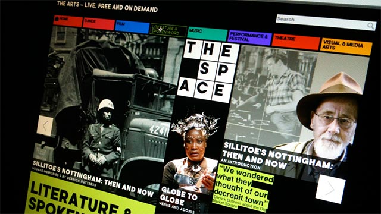
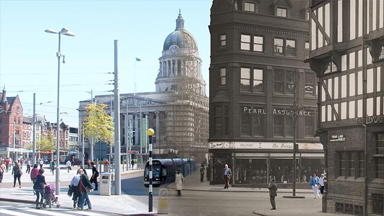
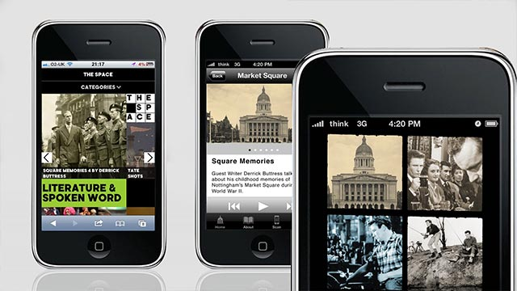
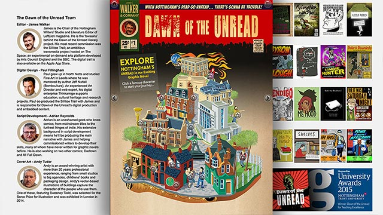
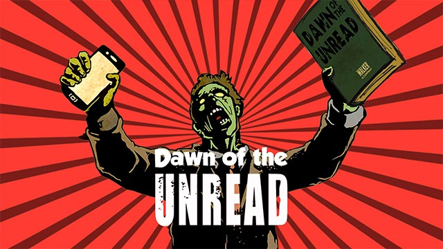
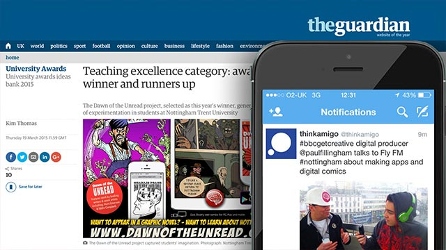
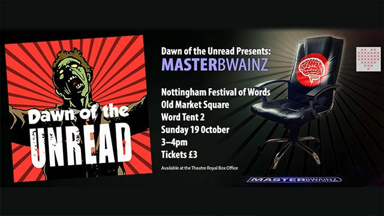
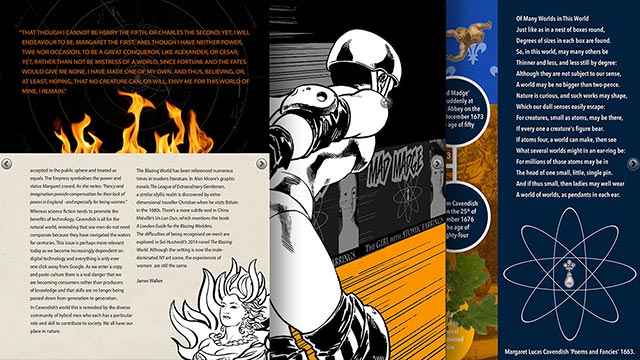
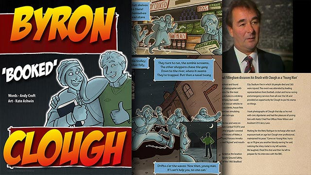

Storytelling
Award-winning Digital Arts Platforms



Since 2010, starting at the Nottingham Writers Studio, James Walker and I have been dismantling the boundaries between the page and the screen. Our collaboration began with a shared mission: to build digital platforms that don’t just host stories, but embody the rebellious spirit of the city they were born in.
Nottingham is defined by its 'unholy trinity' of rebel writers - Sillitoe, Lawrence, and Byron. And a heritage that swings between extremes. From the visionary logic of Ada Lovelace, the world’s first computer programmer, to the frame-wrecking defiance of the Luddites. Our work lives in that same tension, combining digital innovation with a raw, edgy narrative to engage readers in ways that feel both modern and urgent.
Gallery






Supported by the BBC, Arts Council England, and the AHRC, our platforms have empowered scores of creative practitioners to find their digital voice. From the cinematic, site-specific exploration of the *Sillitoe Trail* to the zombie-genre digital comic *Dawn of the Unread*—designed to provoke reluctant teenage readers—we blend the written word with video and live events to create 'Living Literature.
This commitment to creative rebellion earned us the Guardian Award for Teaching Excellence in 2015. More importantly, these case studies served as the strategic backbone for the bid that secured Nottingham’s status as a UNESCO City of Literature, proving that the future of the word is as radical as its past.
Forged by the discipline of the Bauhaus and the fire of the counterculture, I build digital architecture that respects form and function, but also challenges convention.
This creative foundation remains a deliberate contradiction: the rigorous functionalism of the Bauhaus meeting the subversive energy of sixties counterculture. Mentored by artists from that era, I continue to apply the technical discipline required to master the machine and the intellectual courage to push it beyond its current boundaries. This ethos of 'controlled rebellion' is the magic behind every platform I build today—and the blueprint for where I take digital storytelling next.
Projects
- Whatever People Say I Am - Digital comic (2020 - present)
- Memory Theatre - DH Lawrence Pilgrimage (2015 - present)
- Nottingham UNESCO City of Literature Bid (2015)
- Being Arthur - National festival of Humanities (2014)
- Dawn of the Unread - Guardian Award Winner (2014 - 2015)
- The Space Arts - Sillitoe Trail (2012 - 2013)